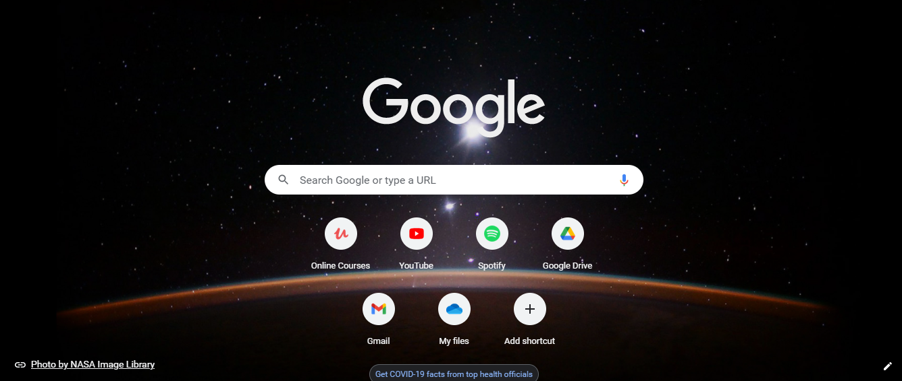
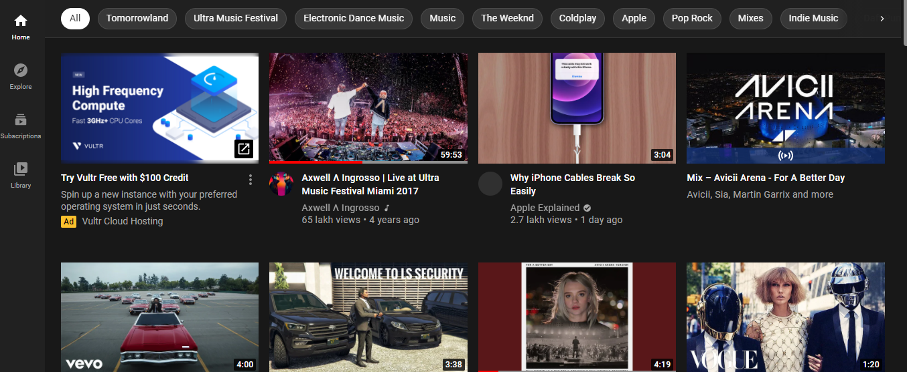
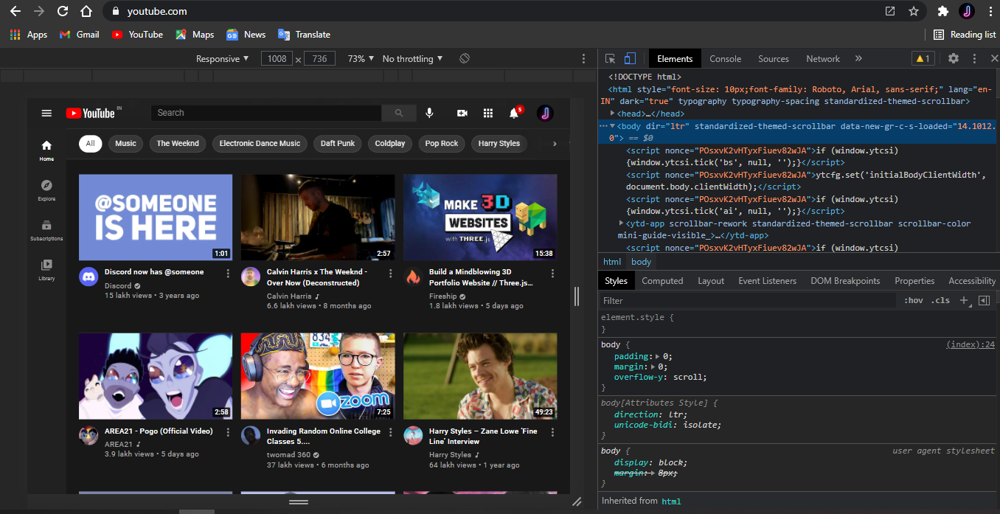
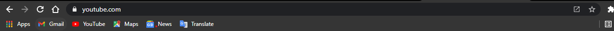
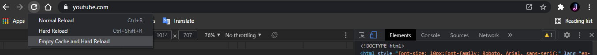

How to clear the cached data of a website?
Conditions: For Chromium based browsers and Mozilla Firefox users only
Article Average Read Time : Approximately 3 minutes.
Hits:
Greetings!
By the end of this short article, you will know what is cached data, how does it affect your apps and websites, and how to clear the cached data of a website on desktop, this is for Google Chrome and Chromium-based browser users only, like, Microsoft Edge, Opera, Opera GX, Brave, Avast Secure Browser, and many others, including non-Chromium based Mozilla's Firefox, in just 4 simple steps.
First things first, what is cached data?
You have heard this term before but do you know what it is?
Cached data is a small amount of data that is installed on your device the first time you visit a site or open an application. Data such as files, scripts, images, and other multimedia are stored on your device after opening an app or visiting a website for the first time.
The data takes up storage in your device and seldom makes the app or website function unusually and inconveniently.
To fix this, follow these steps:
First, open your browser.

It may look like this.
Then, open the website you want to clear the cached data of. For instance, I have opened YouTube.com

Now, press the Function Key, marked as Fn on your keyboard, with the Function Key 12, marked as F12
If you don't have a function key Fn on your keyboard, simply press F12
The Fn+F12 key combination would open a menu that would look like this:

Go to the Chrome tab manager, it would look like this:

Right-click on the refresh button
Select “Empty Cache and Hard Reload”.

It would take a few seconds for the website to reload (depending on your internet/wi-fi's speed).
And now, the cached data is cleared and the website would work smoothly!
Thank you for reading!
Written by:
Symphony 
Verified Account
Founder, content-writer, and programmer @VanguardBlogs' team, ArrowHead.
Mail your Comments
VanguardBlogs.github.io
Tech, simplified.